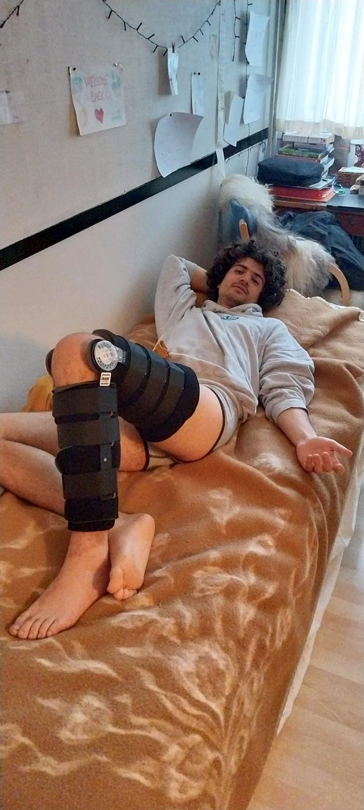
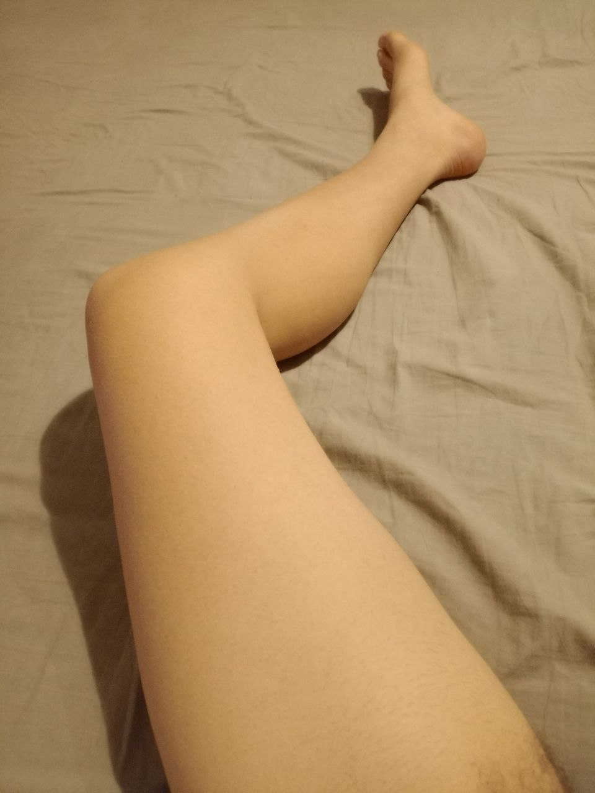

TutYoROTt0
TutYo
ROTt0
Alla soglia dei 30
In che condizioni...
RICHIESTA D'AIUTO
É andata male cari miei, ero pronto, stavo organizzando un party stellare, sarebbe stato un pi-greco day da paura,
ma come al solito ho voluto strafare e ora un si po' fa' più nulla.
Ho tirato la corda, ho voluto spingere più dì che potevo, era alto effettivamente, ho sottovalutato la situazione.
Faccio mea culpa..
Il peggio è che senza non c'è dancefloor, senza.. non c'ha senso.
Lo avevate notato anche voi, già da tempo era compromesso, ma se l'era sempre cavata, teneva duro come dire..
forse era semplicemente giunto il suo tempo, d'altronde il decadimento è in atto, non c'è scampo,
è l'ennesimo boccone amaro ma.. lo accetto, le cose cambiano, non si può aggiustare tutto,
a volte bisogna piegarsi per raccogliere ciò che conta davvero.
Qui una ricostruzione dell'evento disastroso

Ora è li fermo, sfasciato, triste, l'operazione è delicata ma fortuantamete sono in contatto con un sassfonista avellinese che sarebbe disposto a vendermi il suo per qualche migliaio di euro,
tutto compreso, lui la sua carriera l'ha fatta dice e sarebbe contento di dargli una nuova vita, mercato nero chiaramente, per risparmiare tocca pigliare quel che c'è,
comunque ho letto buone recensioni su questo tipo di roba, datata si, ma sempre con un certo sex appeal.
Non si può aspettare più di tanto, va ripristinato al più presto, più si sta fermi peggio è, poi si perde l'attitudine a fare certe cose,
la musica deve continuare, the show must go on!
Quindi, con la scusa dei miei 30 anni potete aiutarmi a fare questo upgrade, vi lascio qui un link paypal per partecipare alle spese.
Nella causale potete tranquillamente scrivere:
IMPIANTONE AUDIO COME DIO COMADA
Siete ora padroni del mio destino.
C0nTriBuIScy
NB: Usate il saldo paypal, no carte, altrimenti quegli stronzi ci pigliano le commissioni,
purtroppo non ho trovato altri metodi sufficientemente popolari.
In alternativa vi lascio umilmente il mio IBAN: IT98W0338501601100080152958
Diciamoci anche la verità, alcuni di voi sono anche indietro con i regali degli anni passati, facciamo che con questo chiudo un occhio e siamo pari ;)
Ah, altra piccola cosa, mi sono rotto il menisco e sono venti giorni che non apro la gamba e cammino come gollum, ma tranquilli me lo passa la mutua, domani (5 marzo) mi scattivano e poi potrò riprendere la mia carriera calcistica.
Per esser chiari, la festa dei miei 30anni è ahimè rimandata a data da definirsi, a sto punto si spera che almeno la bella stagione ci venga incontro,
siate pazienti, troveremo altre occasioni, forse avrò finalmente una laurea la prossima volta, sicuramente grazie al vostro contributo avermo molti più Watt 🤘.
Baci,
il vostro enr

08:38 - 04/03/2025, Castagno (PT)
Gamba depilata pronta per essere perforata